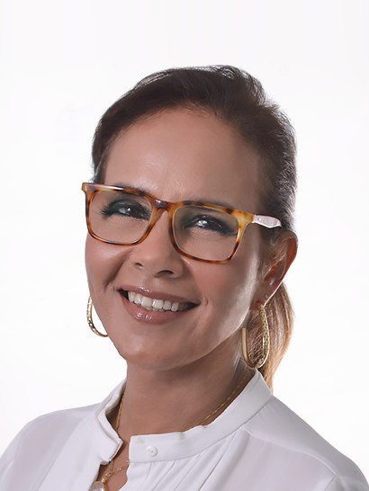
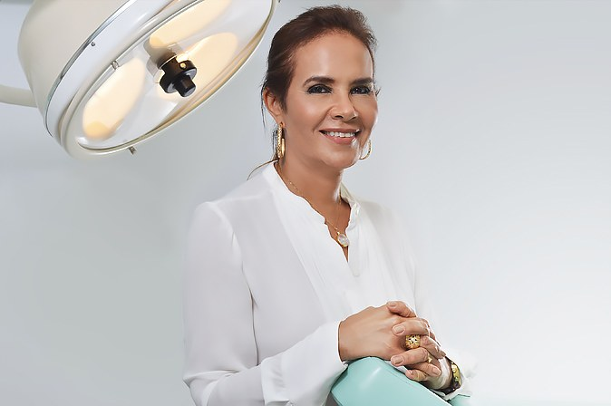

Cirurgiã plástica · CRM-BA 10215 · RQE 11174 · Salvador
Cirurgia plástica estética e reparadora.
A Dra. Cristina Menezes é membro titular da Sociedade Brasileira de Cirurgia Plástica. Formada em 1981, fez pós-graduação em microcirurgia e cirurgia da mão em Paris e foi a primeira mulher a presidir a SBCP Regional Bahia.
“A cirurgia plástica não é sobre transformar, mas sobre realçar o que você já tem de belo.”Dra. Cristina Menezes, no Instagram

Por onde começar
O que você gostaria de cuidar?
Cada página reúne o que a Dra. Cristina escreveu sobre o tema, nos seus sites e no Instagram. A indicação é sempre individual, definida em consulta.
Rejuvenescimento com gordura
A gordura do próprio corpo para repor o volume que o tempo reduziu.
Entender a propostaFacePálpebras e face
Blefaroplastia, lifting facial, otoplastia e tratamento da paralisia facial.
Ver a páginaMamasAumentar, reduzir, reconstruir
Implante de silicone, mamoplastia redutora, mastopexia e reconstrução após o câncer.
Ver a páginaCorpoContorno corporal
Lipoescultura, abdominoplastia, gluteoplastia e cirurgia depois de grande perda de peso.
Ver a páginaEstética e reparadora
“Eu faço as duas coisas: Cirurgias plásticas estéticas e reparadoras e amo o que eu faço.”Dra. Cristina Menezes, no site dela, em 2016
Realçar o que já é seu
- Rejuvenescimento com gordura
- Pálpebras, lifting e orelhas
- Mamas: aumento, redução e mastopexia
- Contorno corporal
- Laser, bioestimuladores e injetáveis
Reconstruir e devolver função
- Mão e nervos periféricos
- Reconstrução da mama após o câncer
- Feridas complexas
- Tumores de pele, com reconstrução imediata
- Cicatrizes, queloides e queimaduras
“As pessoas conhecem apenas a cirurgia plástica estética, mas precisam conhecer a cirurgia plástica reparadora, que salva vidas, que devolve a alegria de viver para tanta gente.”
Cirurgia plástica regenerativa
Trabalhar a favor do corpo, e não contra ele.
“Em vez de mascarar, a proposta regenerativa é reativar aquilo que o tempo foi reduzindo, respeitando a identidade de cada pessoa.”Dra. Cristina Menezes, no Instagram, em setembro de 2026
- Do próprio corpoA gordura autóloga é retirada do próprio paciente, preparada e enxertada onde o volume diminuiu.
- Face e mãosOs sites da Dra. Cristina já citavam o lipofiling (injeção de gordura) na face e o enxerto de gordura nas mãos.
- Sem exageros“Se você sempre teve receio de exageros e resultados artificiais, esse é o universo que vale conhecer de perto.”
- Indicação individualDefinida em consulta, depois da avaliação de cada caso.
Uma história na SBCP
Da formatura em 1981 à Diretoria Nacional.
A trajetória registrada nas revistas da Sociedade Brasileira de Cirurgia Plástica e no currículo que a própria Dra. Cristina publicou.
- MedicinaEscola de Medicina Souza Marques, no Rio de Janeiro
- ParisPós-graduação em microcirurgia e cirurgia da mão
- Membro titularSociedade Brasileira de Cirurgia Plástica
- Primeira mulhera presidir a SBCP Regional Bahia
- Diretoria Nacional2ª vice-presidente da SBCP
“Que a nossa gestão deixe um legado de crescimento científico e social para nossos colegas e queridos pacientes, principalmente os mais carentes”Dra. Cristina Menezes na Plastiko’s nº 231, na apresentação da gestão 2022–2023
Fontes: Plastiko’s nº 208, p.97 · nº 231, p.24 · nº 234 · currículo no site dela (2011)
Sem cirurgia
Tecnologias e tratamentos injetáveis.
Além das cirurgias, o site de 2024 da Dra. Cristina lista Endolaser, laser, harmonização facial, preenchimento com ácido hialurônico e bioestimuladores de colágeno.
- EndolaserLaser aplicado sob a pele, por uma fibra fina
- LaserTecnologia para tratamentos da pele
- BioestimuladoresEstímulo à produção de colágeno
- Ácido hialurônicoPreenchimento facial
- Toxina botulínica“Para atenuar rugas dinâmicas (de expressão)”
- Harmonização facial“Um olhar mais amplo para a face”

Quem é
Dra. Cristina Menezes
“Nós estudamos por mais de 11 anos para poder exercer a função da cirurgia plástica e quando vejo o sorriso e a alegria dos pacientes tenho a certeza que tudo valeu a pena e que faria tudo outra vez.”No site dela, em 2016
Cristina Maria Gomes Gil de Menezes formou-se em Medicina em 1981, na Escola de Medicina Souza Marques, no Rio de Janeiro, e fez pós-graduação em microcirurgia e cirurgia da mão em Paris. Hoje tem vínculo como cirurgiã plástica no Hospital São Rafael e no Hospital Aristides Maltez, e atende no consultório do Horto Office.
- CRM-BA 10215RQE 11174 · Cirurgia Plástica
- SBCPMembro titular
- 2011Coautora na Revista Brasileira de Cirurgia Plástica
- HospitaisSão Rafael e Aristides Maltez
Avaliações públicas
O que os pacientes escreveram.
5 avaliações no Google
Super recomendo médica atenciosa e super competente muito detalhista
Atenciosa, educada, profissional e humanitária.
Medica super competente, cuidadosa, responsavel, carinhosa com seus pacientes.
Trechos de avaliações públicas no Google e no Doctoralia, com o nome abreviado.
Publicações e imprensa
Onde a trajetória ficou registrada.
Consultório
Horto Office, Horto Florestal.
Edifício Horto Office · 4º andarR. Waldemar Falcão, 979 · Horto Florestal · Salvador – BA · CEP 41830-492
Dúvidas frequentes
Antes da consulta
A Dra. Cristina faz cirurgia reparadora?
Sim. Nas palavras dela: “Eu faço as duas coisas: Cirurgias plásticas estéticas e reparadoras e amo o que eu faço.” A cirurgia reparadora inclui a mão e os nervos periféricos, a reconstrução da mama após o câncer, as feridas complexas e os tumores de pele. Cirurgia reparadora
O que é a cirurgia plástica regenerativa?
É a linha de atuação que a Dra. Cristina apresenta no Instagram: “trabalhar a favor do corpo, e não contra ele”, com a gordura do próprio paciente (gordura autóloga). A indicação é individual, definida em consulta.
Otoplastia em criança: não é cedo demais?
“A dúvida é comum: ‘não é cedo demais?’ Na prática, muitas vezes é o contrário”, escreveu a Dra. Cristina. Para ela, “observar o comportamento da criança é tão importante quanto observar a orelha”. A idade e a indicação são avaliadas em consulta.
Como me preparar para a consulta?
Uma orientação do site da Dra. Cristina: “Anotar todas as dúvidas e esclarecê-las pessoalmente com o cirurgião.”
Onde fica o consultório e qual é o horário?
No Edifício Horto Office, R. Waldemar Falcão, 979, 4º andar, Horto Florestal. De segunda a sexta, das 8h às 17h, com agendamento pelo WhatsApp (71) 99983-9876.
A cirurgia plástica tem riscos?
Sim. Como qualquer cirurgia, a cirurgia plástica tem riscos, que são explicados em consulta, antes de qualquer decisão.
Agende
Agende sua consulta com a Dra. Cristina Menezes.
No Edifício Horto Office, no Horto Florestal, de segunda a sexta, das 8h às 17h.